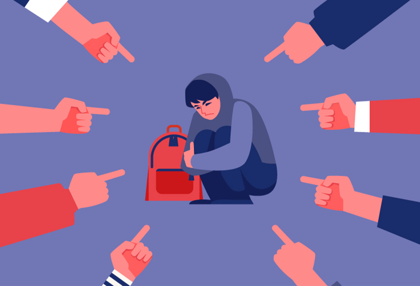

Harcèlement
Qu'est-ce que le harcèlement ? Quels sont les acteurs ?
Le harcèlement se définit comme une violence répétée qui peut être verbale, physique ou psychologique.
Le harcèlement est un phénomène de groupe qui réunit toujours plusieurs acteurs : la victime, son ou ses agresseurs et les témoins.
Pourquoi peut-on dire que l'utilisation des multimédias facilite et accentue le phénomène de harcélement ?
° Il ne s'arrête jamais (contrairement au harcèlement physique, qui s'arrête lorsque l'élève rentre chez lui). Caractère permanent des messages.
° Utilisation et détournement d’informations personnelles.
° Diffusion massive, rapide et ininterrompue des moqueries et/ou insultes.
° Sentiment d'impunité des harceleurs à cause de la « distance » mise par l'écran, et de la non-réaction de certaines plate-formes.
° Désincarnation de la violence (par écran interposé, sans voir les réactions de la victime).